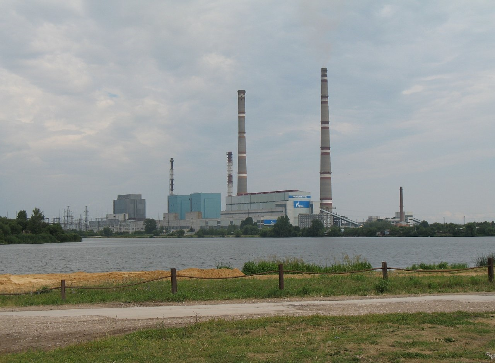

Рязанская ГРЭС
Об электростанции
Рязанская ГРЭС входит в пятерку самых крупных по установленной мощности тепловых электростанций России. Станция расположена в городе Новомичуринск (Пронский район Рязанской области), на берегу реки Проня. Является филиалом компании ОАО «ОГК-2».
Установленная электрическая мощность Рязанской ГРЭС равна 3.070 МВт, а установленная тепловая мощность – 180 Гкал/час. В 2012-ом году станция выработала 8.218 млн. кВт•ч электрической энергии. По итогам этого же года выработка тепловой энергии составила 219 тыс. Гкал. Что касается эффективности работы ГРЭС, то в прошлом году ее КИУМ был равен 30%.
Основным топливом 1-ой очереди станции является бурый уголь Канско-Ачинского угольного бассейна (70%) и бурый уголь марки 2БР Подмосковного угольного бассейна (30%). Природный газ является основным топливом оборудования 2-ой очереди ГРЭС. В качестве резервного топлива используется мазут. Станция работает в составе ОЭС Центра и осуществляет выдачу мощности по линиям электропередачи напряжением 500 и 220 кВ.
В состав Рязанской ГРЭС входят 7 энергоблоков. Четыре блока с турбоагрегатами К-300-240 (электрическая мощность 300 МВт) относятся к 1-ой очереди станции, а два блока с турбинами К-800-240-3 (эл. мощн. 800 МВт) – ко 2-ой очереди.
Строительство Рязанской ГРЭС стартовало в 1968-ом году. Первый энергоблок мощностью 300МВт был введен в эксплуатацию 2-го декабря 1973-го года, в то время как блок № 2 заработал 21-го декабря того же года.
Пуск первой очереди ГРЭС (4 энергоблока суммарной мощностью 1.200 МВт) состоялся в июне 1974-го года. В том же году стартовало строительство второй очереди с оборудованием мощностью 1.600 МВт. Энергоблок № 5 был пущен 22-го декабря 1980-го года, а блок № 6 – 31-го декабря 1981-го года.
В конце 1984-го года энергоблоки № 5 и 6 были переведены на газ, а котельные агрегаты первой очереди П-59 (тепловая мощность 15 Гкал/ч) – на совместное сжигание угля и природного газа.
В 2008-ом году на станции завершились работы по реконструкции оборудования первой и второй очередей, а также были введены новые системы АСУ ТП. 8-го октября того же года в состав станции вошла ГРЭС-24, установленная мощность которой равна 310 МВт.
1-го июня 2010-го года на ГРЭС-24 состоялся пуск модернизированного блока № 7, установленная мощность которого составляет 420 МВт, а удельный расход условного топлива – 279.5 г/кВт•ч.